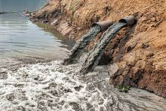

What Is Water Pollution?
Water pollution occurs when harmful substances, most often chemicals or microorganisms, contaminate a stream, river, lake, ocean, aquifer,
or other body of water, lowering water quality and making it toxic to humans or the environment.
Water pollution is a widespread problem that endangers our health. Every year, unsafe water kills more people than war and all other forms of violence combined.
Meanwhile, our drinkable water sources are limited: we have access to less than 1% of the world's freshwater. Without action, the challenges will only get worse by 2050,
when global freshwater demand is expected to be one-third higher than it is now.
What Are the Causes of Water Pollution?
Water is particularly susceptible to pollution. Water, also known as a "universal solvent,"
can dissolve more substances than any other liquid on the planet. It's what gives us juice and
brilliant blue waterfalls. It is also the reason why water is so easily polluted. Toxic substances
from farms, towns, and factories easily dissolve and mix with it, polluting the water.
Where is the pollution coming from?
Point source pollution
Point source pollution occurs when contamination comes from a single source. Water (also known as effluent)
discharged legally or illegally by a manufacturer, oil refinery, or wastewater treatment facility, for example,
as well as contamination from leaking septic systems, chemical and oil spills, and illegal dumping, are examples.
The EPA regulates point source pollution by establishing limits on what can be discharged directly into a body of
water by a facility. While point source pollution originates in a specific location, it has the potential to affect
miles of waterways and the ocean.
Nonpoint source
Nonpoint source pollution is contamination that comes from a wide range of sources. Agricultural or stormwater runoff,
as well as debris blown into waterways from land, may be examples. Nonpoint source pollution is the leading cause of water
pollution in waters, but it is difficult to control because there is no single, identifiable source.
Transboundary
It goes without saying that a line on a map cannot contain water pollution. Transboundary pollution occurs when contaminated
water from one country enters the waters of another. Contamination can occur as a result of a disaster, such as an oil spill, or
as a result of the slow, downriver creep of industrial, agricultural, or municipal discharge.
What Are the Effects of Water Pollution?
On human health
Simply put, water pollution kills. According to a study published in The Lancet, it was responsible for 1.8 million deaths in 2015.
Water contamination can also make you sick. Every year, approximately 1 billion people become ill as a result of contaminated water.
In addition, low-income communities are disproportionately vulnerable because their homes are frequently located closest to the most polluting industries.
Waterborne pathogens, such as disease-causing bacteria and viruses derived from human and animal waste, are a major cause of illness
caused by contaminated drinking water. Cholera, giardia, and typhoid are among the diseases spread by contaminated water.
Even in wealthy countries, accidental or illegal sewage treatment facility releases, as well as farm and urban runoff, contribute harmful pathogens
to waterways.
The problem extends far beyond Flint and involves far more than lead, as a variety of chemical pollutants, ranging from heavy metals like arsenic and mercury
to pesticides and nitrate fertilizers, are finding their way into our water supplies. Toxins, once ingested, can cause a variety of health problems, ranging
from cancer to hormone disruption to altered brain function. Children and pregnant women are especially vulnerable.
Swimming can also be dangerous. According to EPA estimates, 3.5 million Americans get skin rashes, pinkeye, respiratory infections, and hepatitis from
sewage-contaminated coastal waters each year.
On the environment
Healthy ecosystems rely on a complex web of animals, plants, bacteria, and fungi to thrive, all of which interact with one another, either directly or indirectly.
Any harm to any of these organisms can set off a chain reaction that threatens entire aquatic ecosystems.
When water pollution causes an algal bloom in a lake or sea, the proliferation of newly introduced nutrients stimulates plant and algae growth,
lowering oxygen levels in the water. Eutrophication, or a lack of oxygen, suffocates plants and animals and can result in "dead zones," or areas
of water that are essentially devoid of life. In some cases, these harmful algal blooms can also produce neurotoxins that harm wildlife, including
whales and sea turtles.
Waterways are contaminated by chemicals and heavy metals from industrial and municipal wastewater. These contaminants are toxic to aquatic life,
reducing an organism's life span and ability to reproduce, and they move up the food chain as predators eat prey. This is how tuna and other large
fish accumulate large amounts of toxins like mercury.
Marine debris, which can endanger animals, is also a threat to marine ecosystems. Much of this solid debris, such as plastic bags and soda cans,
is swept into sewers and storm drains before being washed out to sea, turning our oceans into trash soup and occasionally congregating to form
floating garbage patches. More than 200 different species of marine life have been harmed by discarded fishing gear and other debris.
Meanwhile, ocean acidification makes it more difficult for shellfish and coral to survive. Oceans are becoming more acidic, despite the fact that they
absorb roughly a quarter of the carbon pollution produced each year by the combustion of fossil fuels. This process makes shellfish and other species'
shell formation more difficult, and it may have an impact on the nervous systems of sharks, clownfish, and other marine life.